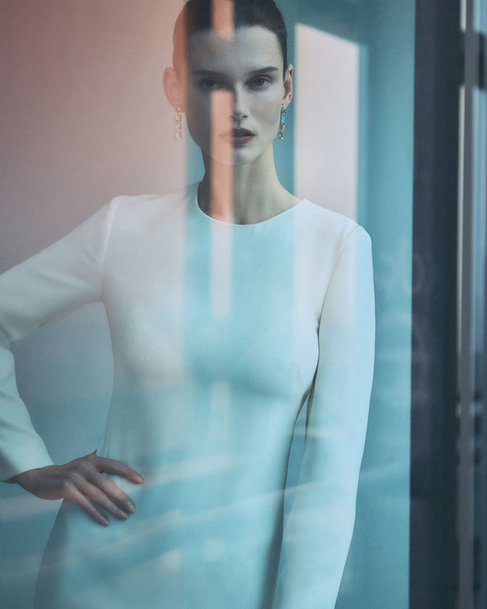
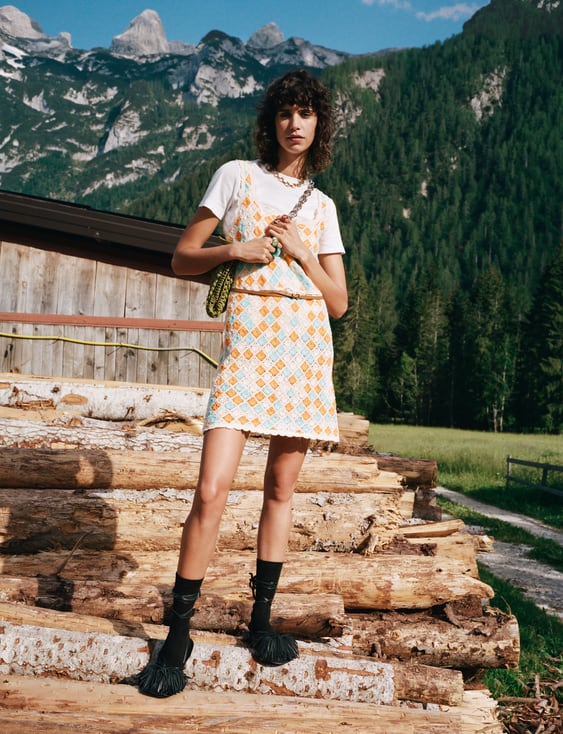

Soloprod 是一家位于意大利米兰的摄影与影视制作公司，业务面向时尚、奢侈品牌与商业广告。官网展示了 Giorgio Armani、Saint Laurent、BOSS、Moncler、ZARA 等品牌项目，也包括杂志摄影和广告短片。官网作品
这些项目会分别标注摄影师或导演。Soloprod 的身份是制作公司：它参与组织拍摄所需的条件，让创作者能够完成影像。
制作公司在做什么
Soloprod 在公司介绍中强调对拍摄地区的了解、供应商关系、全球合作网络，以及团队与预算协调。其公开团队职位包括执行制片人、制片人和制作协调员。这些信息说明，它所提供的服务，围绕着一次项目如何被组织和执行展开。公司介绍
例如，一场外景拍摄可能同时面对地点、人员、器材、时间与费用的约束。摄影师需要合适的光线与拍摄位置，团队则需要按计划抵达并获得工作条件。如果一项安排发生变化，其他环节也可能需要调整。这是理解制片工作的一种简化场景，并非对下述项目幕后流程的还原。
公司把自己的目标表述为，让复杂的组织工作不妨碍创作者。对应到实际价值，就是减少创作与执行之间的断点：需要的资源能否到位，拍摄时间能否协调，预算能否支撑方案。Soloprod 对制作服务的说明
两组作品：地点如何进入画面
官网中的两个摄影项目，提供了很直观的对照。以下是对公开画面的视觉解读。
Giorgio Armani：玻璃与人物的距离

Giorgio Armani Made to Measure。摄影：Giulio Rustichelli；官网标注地点：米兰。图片来源：Soloprod 项目页。
这张人像中，白色服装、面部与手势构成清楚的人物轮廓，玻璃上的蓝青色与淡橙色反射又叠在其上。竖向分隔穿过脸部和身体，使画面出现遮挡与层次。
人物看向镜头，反射却让观看产生一层间隔。服装的简洁线条仍然可见，整体呈现出冷静、精致而略有疏离感的形象。空间中的玻璃、反射和色彩共同参与了人物的表达。
ZARA：服装与山地环境

Zara Dolomites。摄影：Angelo Pennetta；官网标注地点：Dolomiti，多洛米蒂地区。图片来源：Soloprod 项目页。
这张照片保留了人物全身，也留下大量环境：近处是堆放的原木和木屋，远处是树林、山峰与蓝天。浅色服装中的橙、蓝菱格纹，在深绿背景前比较醒目。
人物的姿态与服装细节仍然经过安排，但山地环境让画面带上出游和户外生活的联想。原木的粗糙表面、树林的密度与浅色织物形成对照，服装因而进入了一个具体的生活情境。
两张照片使用了不同的空间关系：一张以玻璃和反射叠加人物，一张将人物放进开阔景色。地点、光线与构图共同影响服装如何被观看。对于制作工作而言，找到并组织适合创作的拍摄条件，也就与最终画面建立了联系。
如何理解作品署名
Armani 项目署名 Giulio Rustichelli，ZARA 项目署名 Angelo Pennetta；两个项目页同时标明由 Soloprod 制作。这里存在不同的贡献：品牌是项目的客户方，摄影师承担摄影创作，制作公司参与项目组织与执行。Armani 项目、ZARA 项目
因此，制作公司的作品集可以呈现多种摄影语言。它展示的能力，除了参与过哪些项目，还包括能否支持不同创作者和不同拍摄环境。Soloprod 官网反复强调的当地资源、合作网络和协调能力，正是在回应这种需求。
资料查阅于 2026 年 10 月 25 日。项目名称、署名与地点依据官网；画面中的气质与作用为本文解读，不代表品牌或摄影师已阐述的创作动机。
留言
由 Disqus 提供。